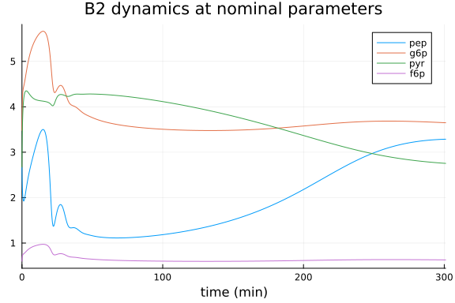
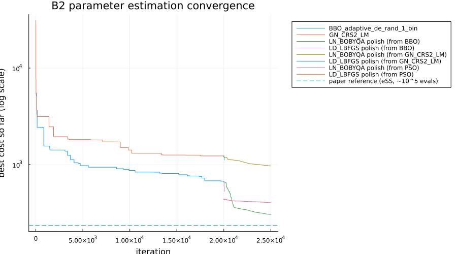
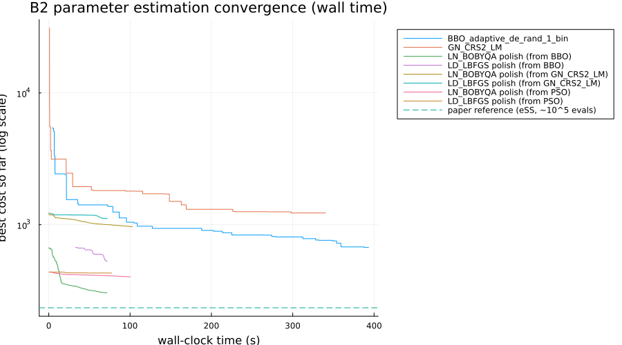

BioPreDyn-bench B2 (E. coli Central Metabolism) Parameter Estimation Benchmark
Parameter estimation of the Chassagnole E. coli central carbon metabolism model
This benchmark implements problem B2 from the BioPreDyn-bench suite (Villaverde et al. 2015), addressing SciMLBenchmarks.jl#555. B2 is a kinetic model of E. coli central carbon metabolism (glycolysis, pentose phosphate pathway, and related reactions) originally due to Chassagnole et al. (2002), with 18 dynamic states and 116 unknown kinetic parameters, fit against real time-course measurements from a glucose pulse experiment. It is the smallest of the BioPreDyn-bench problems that uses real (rather than simulated) experimental data.
The model equations, nominal parameters, parameter bounds, and experimental data below are transcribed directly from the benchmark's official MATLAB/AMIGO2 implementation, available as supplementary material to the paper (Additional files 2-3, directory BioPreDynBenchFiles/B2).
using OrdinaryDiffEq, DiffEqParamEstim, Optimization, ForwardDiff
using OptimizationBBO, OptimizationNLopt, Plots, BenchmarkTools, DataFrames
using ParallelParticleSwarms
gr(fmt = :png)Plots.GRBackend()Model
States (in order): dihydroxyacetone phosphate (dhap), erythrose 4-phosphate (e4p), fructose 6-phosphate (f6p), fructose 1,6-bisphosphate (fdp), glucose 1-phosphate (g1p), glucose 6-phosphate (g6p), glyceraldehyde 3-phosphate (gap), phosphoenolpyruvate (pep), 6-phosphogluconate (pg), 2-phosphoglycerate (pg2), 3-phosphoglycerate (pg3), 1,3-bisphosphoglycerate (pgp), pyruvate (pyr), ribose 5-phosphate (rib5p), ribulose 5-phosphate (ribu5p), sedoheptulose 7-phosphate (sed7p), xylulose 5-phosphate (xyl5p), and extracellular glucose (glcex).
Adenine/nicotinamide cofactor concentrations (ATP, ADP, AMP, NAD, NADH, NADP, NADPH) are not dynamic states in this model; they follow empirical time-varying functions fit to independent measurements (as in the original benchmark).
function chassagnole!(du, u, p, t)
cdhap, ce4p, cf6p, cfdp, cg1p, cg6p, cgap, cpep, cpg, cpg2, cpg3, cpgp,
cpyr, crib5p, cribu5p, csed7p, cxyl5p, cglcex = u
kALDOdhap, kALDOeq, kALDOfdp, kALDOgap, kALDOgapinh, KDAHPSe4p, KDAHPSpep,
KENOeq, KENOpep, KENOpg2, KG1PATatp, KG1PATfdp, KG1PATg1p, KG3PDHdhap,
KG6PDHg6p, KG6PDHnadp, KG6PDHnadphg6pinh, KG6PDHnadphnadpinh, KGAPDHeq,
KGAPDHgap, KGAPDHnad, KGAPDHnadh, KGAPDHpgp, KPDHpyr, KpepCxylasefdp,
KpepCxylasepep, KPFKadpa, KPFKadpb, KPFKadpc, KPFKampa, KPFKampb, KPFKatps,
KPFKf6ps, KPFKpep, KPGDHatpinh, KPGDHnadp, KPGDHnadphinh, KPGDHpg, KPGIeq,
KPGIf6p, KPGIf6ppginh, KPGIg6p, KPGIg6ppginh, KPGKadp, KPGKatp, KPGKeq,
KPGKpg3, KPGKpgp, KPGluMueq, KPGluMupg2, KPGluMupg3, KPGMeq, KPGMg1p,
KPGMg6p, KPKadp, KPKamp, KPKatp, KPKfdp, KPKpep, KPTSa1, KPTSa2, KPTSa3,
KPTSg6p, KR5PIeq, KRPPKrib5p, KRu5Peq, KSerSynthpg3, KSynth1pep,
KSynth2pyr, KTAeq, kTISdhap, kTISeq, kTISgap, KTKaeq, KTKbeq, LPFK, LPK,
nDAHPSe4p, nDAHPSpep, nG1PATfdp, nPDH, npepCxylasefdp, nPFK, nPK,
nPTSg6p, rmaxALDO, rmaxDAHPS, rmaxENO, rmaxG1PAT, rmaxG3PDH, rmaxG6PDH,
rmaxGAPDH, rmaxMetSynth, rmaxMurSynth, rmaxPDH, rmaxpepCxylase, rmaxPFK,
rmaxPGDH, rmaxPGI, rmaxPGK, rmaxPGluMu, rmaxPGM, rmaxPK, rmaxPTS,
rmaxR5PI, rmaxRPPK, rmaxRu5P, rmaxSerSynth, rmaxSynth1, rmaxSynth2,
rmaxTA, rmaxTIS, rmaxTKa, rmaxTKb, rmaxTrpSynth, VALDOblf = p
# known (fixed, not estimated) parameters
cfeed = 110.96
Dil = 2.78e-05
mu = 2.78e-05
cytosol = 1.0
extracellular = 1.0
# empirical time-varying cofactor concentrations
cadp = 0.582 + 1.73 * 2.731^(-0.15 * t) * (0.12 * t + 0.000214 * t^3)
camp = 0.123 + 7.25 * (t / (7.25 + 1.47 * t + 0.17 * t^2)) + 1.073 / (1.29 + 8.05 * t)
catp = 4.27 - 4.163 * (t / (0.657 + 1.43 * t + 0.0364 * t^2))
cnad = 1.314 + 1.314 * 2.73^(-0.0435 * t - 0.342) -
(t + 7.871) * (2.73^(-0.0218 * t - 0.171) / (8.481 + t))
cnadh = 0.0934 + 0.00111 * 2.371^(-0.123 * t) * (0.844 * t + 0.104 * t^3)
cnadp = 0.159 - 0.00554 * (t / (2.8 - 0.271 * t + 0.01 * t^2)) + 0.182 / (4.82 + 0.526 * t)
cnadph = 0.062 +
0.332 * 2.718^(-0.464 * t) *
(0.0166 * t^1.58 + 0.000166 * t^4.73 + 0.1312e-9 * t^7.89 +
0.1362e-12 * t^11 + 0.1233e-15 * t^14.2)
vALDO = cytosol * rmaxALDO * (cfdp - cgap * cdhap / kALDOeq) /
(kALDOfdp + cfdp + kALDOgap * cdhap / (kALDOeq * VALDOblf) +
kALDOdhap * cgap / (kALDOeq * VALDOblf) + cfdp * cgap / kALDOgapinh +
cgap * cdhap / (VALDOblf * kALDOeq))
vDAHPS = cytosol * rmaxDAHPS * ce4p^nDAHPSe4p * cpep^nDAHPSpep /
((KDAHPSe4p + ce4p^nDAHPSe4p) * (KDAHPSpep + cpep^nDAHPSpep))
vDHAP = cytosol * mu * cdhap
vE4P = cytosol * mu * ce4p
vENO = cytosol * rmaxENO * (cpg2 - cpep / KENOeq) / (KENOpg2 * (1 + cpep / KENOpep) + cpg2)
vEXTER = extracellular * Dil * (cfeed - cglcex)
vG1PAT = cytosol * rmaxG1PAT * cg1p * catp * (1 + (cfdp / KG1PATfdp)^nG1PATfdp) /
((KG1PATatp + catp) * (KG1PATg1p + cg1p))
vG3PDH = cytosol * rmaxG3PDH * cdhap / (KG3PDHdhap + cdhap)
vG6P = cytosol * mu * cg6p
vG6PDH = cytosol * rmaxG6PDH * cg6p * cnadp /
((cg6p + KG6PDHg6p) * (1 + cnadph / KG6PDHnadphg6pinh) *
(KG6PDHnadp * (1 + cnadph / KG6PDHnadphnadpinh) + cnadp))
vGAP = cytosol * mu * cgap
vGAPDH = cytosol * rmaxGAPDH * (cgap * cnad - cpgp * cnadh / KGAPDHeq) /
((KGAPDHgap * (1 + cpgp / KGAPDHpgp) + cgap) *
(KGAPDHnad * (1 + cnadh / KGAPDHnadh) + cnad))
vGLP = cytosol * mu * cg1p
vMURSyNTH = cytosol * rmaxMurSynth
vMethSynth = cytosol * rmaxMetSynth
vPDH = cytosol * rmaxPDH * cpyr^nPDH / (KPDHpyr + cpyr^nPDH)
vPEP = cytosol * mu * cpep
vPFK = cytosol * rmaxPFK * catp * cf6p /
((catp + KPFKatps * (1 + cadp / KPFKadpc)) *
(cf6p + KPFKf6ps * (1 + cpep / KPFKpep + cadp / KPFKadpb + camp / KPFKampb) /
(1 + cadp / KPFKadpa + camp / KPFKampa)) *
(1 + LPFK / (1 + cf6p * (1 + cadp / KPFKadpa + camp / KPFKampa) /
(KPFKf6ps * (1 + cpep / KPFKpep + cadp / KPFKadpb + camp / KPFKampb)))^nPFK))
vPG = cytosol * mu * cpg
vPG3 = cytosol * mu * cpg3
vPGDH = cytosol * rmaxPGDH * cpg * cnadp /
((cpg + KPGDHpg) * (cnadp + KPGDHnadp * (1 + cnadph / KPGDHnadphinh) * (1 + catp / KPGDHatpinh)))
vPGI = cytosol * rmaxPGI * (cg6p - cf6p / KPGIeq) /
(KPGIg6p * (1 + cf6p / (KPGIf6p * (1 + cpg / KPGIf6ppginh)) + cpg / KPGIg6ppginh) + cg6p)
vPGK = cytosol * rmaxPGK * (cadp * cpgp - catp * cpg3 / KPGKeq) /
((KPGKadp * (1 + catp / KPGKatp) + cadp) * (KPGKpgp * (1 + cpg3 / KPGKpg3) + cpgp))
vPGM = cytosol * rmaxPGM * (cg6p - cg1p / KPGMeq) / (KPGMg6p * (1 + cg1p / KPGMg1p) + cg6p)
vPGP = cytosol * mu * cpgp
vPK = cytosol * rmaxPK * cpep * (cpep / KPKpep + 1)^(nPK - 1) * cadp /
(KPKpep * (LPK * ((1 + catp / KPKatp) / (cfdp / KPKfdp + camp / KPKamp + 1))^nPK +
(cpep / KPKpep + 1)^nPK) * (cadp + KPKadp))
vPPK = cytosol * rmaxRPPK * crib5p / (KRPPKrib5p + crib5p)
vPTS = extracellular * rmaxPTS * cglcex * (cpep / cpyr) /
((KPTSa1 + KPTSa2 * (cpep / cpyr) + KPTSa3 * cglcex + cglcex * (cpep / cpyr)) *
(1 + cg6p^nPTSg6p / KPTSg6p))
vR5PI = cytosol * rmaxR5PI * (cribu5p - crib5p / KR5PIeq)
vRIB5P = cytosol * mu * crib5p
vRibu5p = cytosol * mu * cribu5p
vRu5P = cytosol * rmaxRu5P * (cribu5p - cxyl5p / KRu5Peq)
vSED7P = cytosol * mu * csed7p
vSynth1 = cytosol * rmaxSynth1 * cpep / (KSynth1pep + cpep)
vSynth2 = cytosol * rmaxSynth2 * cpyr / (KSynth2pyr + cpyr)
vTA = cytosol * rmaxTA * (cgap * csed7p - ce4p * cf6p / KTAeq)
vTIS = cytosol * rmaxTIS * (cdhap - cgap / kTISeq) / (kTISdhap * (1 + cgap / kTISgap) + cdhap)
vTKA = cytosol * rmaxTKa * (crib5p * cxyl5p - csed7p * cgap / KTKaeq)
vTKB = cytosol * rmaxTKb * (cxyl5p * ce4p - cf6p * cgap / KTKbeq)
vTRPSYNTH = cytosol * rmaxTrpSynth
vXYL5P = cytosol * mu * cxyl5p
vf6P = cytosol * mu * cf6p
vfdP = cytosol * mu * cfdp
vpepCxylase = cytosol * rmaxpepCxylase * cpep * (1 + (cfdp / KpepCxylasefdp)^npepCxylasefdp) /
(KpepCxylasepep + cpep)
vpg2 = cytosol * mu * cpg2
vpyr = cytosol * mu * cpyr
vrpGluMu = cytosol * rmaxPGluMu * (cpg3 - cpg2 / KPGluMueq) /
(KPGluMupg3 * (1 + cpg2 / KPGluMupg2) + cpg3)
vsersynth = cytosol * rmaxSerSynth * cpg3 / (KSerSynthpg3 + cpg3)
du[1] = (vALDO - vDHAP - vG3PDH - vTIS) / cytosol
du[2] = (-vDAHPS - vE4P + vTA - vTKB) / cytosol
du[3] = (-2.0 * vMURSyNTH - vPFK + vPGI + vTA + vTKB - vf6P) / cytosol
du[4] = (-vALDO + vPFK - vfdP) / cytosol
du[5] = (-vG1PAT - vGLP + vPGM) / cytosol
du[6] = (-vG6P - vG6PDH - vPGI - vPGM + 65.0 * vPTS) / cytosol
du[7] = (vALDO - vGAP - vGAPDH - vTA + vTIS + vTKA + vTKB + vTRPSYNTH) / cytosol
du[8] = (-vDAHPS + vENO - vPEP - vPK - 65.0 * vPTS - vSynth1 - vpepCxylase) / cytosol
du[9] = (vG6PDH - vPG - vPGDH) / cytosol
du[10] = (-vENO - vpg2 + vrpGluMu) / cytosol
du[11] = (-vPG3 + vPGK - vrpGluMu - vsersynth) / cytosol
du[12] = (vGAPDH - vPGK - vPGP) / cytosol
du[13] = (vMethSynth - vPDH + vPK + 65.0 * vPTS - vSynth2 + vTRPSYNTH - vpyr) / cytosol
du[14] = (-vPPK + vR5PI - vRIB5P - vTKA) / cytosol
du[15] = (vPGDH - vR5PI - vRibu5p - vRu5P) / cytosol
du[16] = (-vSED7P - vTA + vTKA) / cytosol
du[17] = (vRu5P - vTKA - vTKB - vXYL5P) / cytosol
du[18] = (vEXTER - vPTS) / extracellular
nothing
endchassagnole! (generic function with 1 method)Nominal parameters, bounds, and initial condition
p_nom = [
0.088, 0.144, 1.75, 0.088, 0.6, 0.035, 0.0053, 6.73, 0.135, 0.1, 4.42,
0.119, 3.2, 1.0, 14.4, 0.0246, 6.43, 0.01, 0.63, 0.683, 0.252, 1.09,
1.04e-5, 1159.0, 0.7, 4.07, 128.0, 3.89, 4.14, 19.1, 3.2, 0.123, 0.325,
3.26, 208.0, 0.0506, 0.0138, 37.5, 0.1725, 0.266, 0.2, 2.9, 0.2, 0.185,
0.653, 1934.4, 0.473, 0.0468, 0.188, 0.369, 0.2, 0.196, 0.0136, 1.038,
0.26, 0.2, 22.5, 0.19, 0.31, 3082.3, 0.01, 245.3, 2.15, 4.0, 0.1, 1.4,
1.0, 1.0, 1.0, 1.05, 2.8, 1.39, 0.3, 1.2, 10.0, 5.62907e6, 1000.0, 2.6,
2.2, 1.2, 3.68, 4.21, 11.1, 4.0, 3.66, 17.4146, 0.107953, 330.448,
0.00752546, 0.0116204, 1.3802, 921.594, 0.0022627, 0.00043711, 6.05953,
0.107021, 1840.58, 16.2324, 650.988, 3021.77, 89.0497, 0.839824,
0.0611315, 7829.78, 4.83841, 0.0129005, 6.73903, 0.0257121, 0.019539,
0.0736186, 10.8716, 68.6747, 9.47338, 86.5586, 0.001037, 2.0]
# lower/upper bounds: an order of magnitude below/above nominal, except for
# the eight Hill-type exponents (n***, indices 78-85), bounded to [1, 12]
p_lower = p_nom ./ 10
p_upper = p_nom .* 10
for i in 78:85
p_lower[i] = 1.0
p_upper[i] = 12.0
end
u0 = [0.167, 0.098, 0.6, 0.272, 0.653, 3.48, 0.218, 2.67, 0.808, 0.399, 2.13,
0.008, 2.67, 0.398, 0.111, 0.276, 0.138, 2.0]
tspan = (0.0, 301.0)
prob = ODEProblem(chassagnole!, u0, tspan, p_nom)ODEProblem with uType Vector{Float64} and tType Float64. In-place: true
Non-trivial mass matrix: false
timespan: (0.0, 301.0)
u0: 18-element Vector{Float64}:
0.167
0.098
0.6
0.272
0.653
3.48
0.218
2.67
0.808
0.399
2.13
0.008
2.67
0.398
0.111
0.276
0.138
2.0Experimental data
Five independent glucose-pulse experiments, digitized from Chassagnole et al. (2002) and used as-is in the BioPreDyn-bench AMIGO2 implementation. Each experiment observes a different subset of states at its own sampling times.
exp1_times = [0.15, 0.3, 0.45, 0.6, 0.8, 5.5, 12.0, 21.5, 31.5, 61.0, 90.0, 120.5, 180.5, 300.5]
exp1_states = [8, 6, 13, 3] # pep, g6p, pyr, f6p
exp1_data = [
1.99 4.39 4.07 0.62
2.10 4.76 3.71 0.66
2.09 4.86 3.19 0.74
1.84 4.65 3.57 0.62
2.31 4.75 3.14 0.75
2.76 5.52 2.38 0.92
3.05 5.86 3.71 1.15
2.42 4.39 3.19 0.57
2.23 3.60 5.24 0.46
2.52 3.83 4.47 0.57
2.81 4.30 3.62 0.57
2.71 4.05 3.62 0.69
2.71 3.27 2.86 0.46
2.70 3.38 2.40 0.46]
exp2_times = [5.5, 13.5, 31.0, 61.0, 91.0, 151.0, 181.0, 212.5, 241.0, 270.5, 301.0]
exp2_states = [18] # glcex
exp2_data = reshape(
[1.255555556, 1.311111111, 1.283333333, 0.8611111111, 0.5972222223,
0.09611111112, 0.04333333334, 0.05055555556, 0.04777777778,
0.04777777778, 0.06], :, 1)
exp3_times = [2.0, 16.0, 19.0, 31.0, 57.0, 91.5, 150.5, 299.0]
exp3_states = [5] # g1p
exp3_data = reshape([1.35, 0.83, 0.83, 0.78, 0.84, 0.64, 0.74, 0.70], :, 1)
exp4_times = [3.5, 4.0, 12.0, 12.25, 21.0, 25.75, 30.0, 32.25, 58.5, 59.0,
119.75, 124.0, 178.0, 180.0, 209.0]
exp4_states = [9] # 6pg
exp4_data = reshape(
[1.01, 0.92, 1.15, 1.19, 1.06, 1.10, 1.05, 1.08, 0.97, 1.01, 0.92, 0.89,
0.74, 0.88, 0.80], :, 1)
exp5_times = [4.5, 11.0, 20.0, 30.0, 60.0, 90.0, 119.5, 180.0, 239.5, 300.0]
exp5_states = [4, 7] # fdp, gap
exp5_data = [
0.19 0.28
0.56 0.32
1.00 0.31
2.83 0.24
1.50 0.30
2.26 0.18
2.40 0.22
1.25 0.21
0.07 0.22
0.02 0.20]
experiments = [
(times = exp1_times, states = exp1_states, data = exp1_data),
(times = exp2_times, states = exp2_states, data = exp2_data),
(times = exp3_times, states = exp3_states, data = exp3_data),
(times = exp4_times, states = exp4_states, data = exp4_data),
(times = exp5_times, states = exp5_states, data = exp5_data)]5-element Vector{@NamedTuple{times::Vector{Float64}, states::Vector{Int64},
data::Matrix{Float64}}}:
(times = [0.15, 0.3, 0.45, 0.6, 0.8, 5.5, 12.0, 21.5, 31.5, 61.0, 90.0, 12
0.5, 180.5, 300.5], states = [8, 6, 13, 3], data = [1.99 4.39 4.07 0.62; 2.
1 4.76 3.71 0.66; … ; 2.71 3.27 2.86 0.46; 2.7 3.38 2.4 0.46])
(times = [5.5, 13.5, 31.0, 61.0, 91.0, 151.0, 181.0, 212.5, 241.0, 270.5,
301.0], states = [18], data = [1.255555556; 1.311111111; … ; 0.04777777778;
0.06;;])
(times = [2.0, 16.0, 19.0, 31.0, 57.0, 91.5, 150.5, 299.0], states = [5],
data = [1.35; 0.83; … ; 0.74; 0.7;;])
(times = [3.5, 4.0, 12.0, 12.25, 21.0, 25.75, 30.0, 32.25, 58.5, 59.0, 119
.75, 124.0, 178.0, 180.0, 209.0], states = [9], data = [1.01; 0.92; … ; 0.8
8; 0.8;;])
(times = [4.5, 11.0, 20.0, 30.0, 60.0, 90.0, 119.5, 180.0, 239.5, 300.0],
states = [4, 7], data = [0.19 0.28; 0.56 0.32; … ; 0.07 0.22; 0.02 0.2])Objective function
The BioPreDyn-bench objective is a weighted least-squares cost with a relative (15%) standard deviation model, floored to avoid division by zero — reproduced here exactly from the AMIGO2 script b2_obj.m.
function biopredyn_b2_cost(p)
# Away from the nominal parameters, global optimizers routinely probe
# combinations that drive a state negative, which raised to one of the
# model's non-integer Hill exponents throws a DomainError. The original
# AMIGO2/MATLAB objective handles this by checking `isreal`/`isnan` after
# integration and substituting a large penalty (`f = 1e20`); we do the
# equivalent with a try/catch here, since Julia raises instead of
# returning a complex number.
try
sol = solve(prob, Rodas5P(), p = p, reltol = 1e-6, abstol = 1e-8)
sol.retcode == ReturnCode.Success || return 1e20
cost = 0.0
for e in experiments
simvals = Array(sol(e.times))[e.states, :]'
err = max.(0.15 .* abs.(e.data), 1e-6)
cost += sum(((simvals .- e.data) ./ err) .^ 2)
end
return cost
catch e
e isa DomainError || rethrow()
return 1e20
end
endbiopredyn_b2_cost (generic function with 1 method)@time cost_nominal = biopredyn_b2_cost(p_nom)2.980624 seconds (6.93 M allocations: 318.969 MiB, 3.50% gc time, 98.04%
compilation time)
31132.6042126662The original study reports reaching a cost of Jf ≈ 234.2 using the enhanced scatter search (eSS) global optimizer after ~10⁵ function evaluations (about 3 hours of CPU time), starting from these same nominal parameters as the initial guess.
Visualizing the fit at nominal parameters
sol_nom = solve(prob, Rodas5P(), p = p_nom, reltol = 1e-6, abstol = 1e-8)
plot(sol_nom, idxs = [8, 6, 13, 3], label = ["pep" "g6p" "pyr" "f6p"],
xlabel = "time (min)", title = "B2 dynamics at nominal parameters")
Parameter estimation
We benchmark global optimizers on this 116-parameter problem, starting from the nominal parameters as the initial guess and using the bounds given above (matching the original study's setup). This is a substantially harder problem than the other benchmarks in this folder (116 parameters vs. 4): the original study needed ~10⁵ evaluations of a more sophisticated hybrid metaheuristic (eSS) to reach Jf ≈ 234.2. We use a budget of ~20,000 evaluations per optimizer here — enough to show real convergence behavior on typical benchmark hardware, though (using simpler, off-the-shelf global optimizers rather than eSS, and a smaller budget than the original study) not necessarily enough to fully match the literature optimum on its own.
In addition to BBO_adaptive_de_rand_1_bin (BlackBoxOptim's differential evolution) and GN_CRS2_LM (NLopt's controlled random search), we include ParallelPSOArray from ParallelParticleSwarms.jl, a particle-swarm optimizer aimed at high-dimensional problems like this one. ParallelParticleSwarms.jl also ships SerialPSO (which errors here with a Random.Sampler MethodError) and a built-in HybridPSO that pairs PSO with a gradient-based local polish (SimpleLBFGS by default) in one call — a natural fit for exactly the two-stage global-then-local approach used later in this benchmark. An earlier version of this benchmark reported HybridPSO as broken on the registered release; that was wrong. Reading ParallelParticleSwarms's source directly shows HybridPSOCache and its solve! methods for both SimpleLBFGS and BFGS local refinement are present in v1.6.2, and HybridPSO does work correctly with its actual default swarm (ParallelPSOKernel) — confirmed on a small test problem. The earlier MethodError came from our own nonstandard substitution: we had swapped in ParallelPSOArray as HybridPSO's inner swarm to "isolate" what we assumed was a swarm-independent bug, but ParallelPSOArray (unlike ParallelPSOKernel/ParallelSyncPSOKernel) has no custom SciMLBase.init, so it falls back to a generic OptimizationBase cache that doesn't support the calling convention HybridPSO's solve! relies on — an artifact of that substitution, not a real library defect.
HybridPSO's default swarm also requires SArray-typed bounds and initial guess (ParallelPSOKernel's init asserts prob.u0 isa SArray), so using it here means passing p_nom/p_lower/p_upper as StaticArrays.SVectors of length 116 instead of Vectors. At that dimension this did not finish: a test run with a modest budget did not return within two hours and was killed, consistent with the StaticArrays/KernelAbstractions-based kernels underlying HybridPSO not scaling to 116 static parameters in practical compile/run time (it worked fine on a 20-parameter test problem). We therefore chain ParallelPSOArray with LN_BOBYQA/LD_LBFGS manually below instead, which needs no SArray conversion and has no such blowup at this dimension. ParallelPSOArray does not yet support the callback keyword used below for the other optimizers, so its per-iteration history isn't available for the convergence plot, only its final result.
Each trackable optimizer's raw per-evaluation cost is recorded via a callback, from which we compute the running best-found cost for a convergence plot.
optf = OptimizationFunction((p, _) -> biopredyn_b2_cost(p))
optprob = OptimizationProblem(optf, p_nom, lb = p_lower, ub = p_upper)OptimizationProblem. In-place: true
u0: 116-element Vector{Float64}:
0.088
0.144
1.75
0.088
0.6
0.035
0.0053
6.73
0.135
0.1
⋮
0.0257121
0.019539
0.0736186
10.8716
68.6747
9.47338
86.5586
0.001037
2.0losses_bbo = Float64[]
times_bbo = Float64[]
t0_bbo = time()
cb_bbo = (state, l) -> (push!(losses_bbo, l); push!(times_bbo, time() - t0_bbo); false)
@time res_bbo = solve(
optprob, BBO_adaptive_de_rand_1_bin(), maxiters = 20000, callback = cb_bbo)
res_bbo.objective393.233928 seconds (117.22 M allocations: 9.923 GiB, 1.82% gc time, 1.04% c
ompilation time)
671.9662721907098losses_nlopt = Float64[]
times_nlopt = Float64[]
t0_nlopt = time()
cb_nlopt = (state, l) -> (push!(losses_nlopt, l); push!(times_nlopt, time() - t0_nlopt); false)
opt = Opt(:GN_CRS2_LM, length(p_nom))
@time res_nlopt = solve(optprob, opt, maxiters = 20000, callback = cb_nlopt)
res_nlopt.objective340.251887 seconds (98.87 M allocations: 8.611 GiB, 1.79% gc time, 0.24% co
mpilation time: 10% of which was recompilation)
1227.547314263947n_particles = 40
@time res_pso = solve(optprob, ParallelPSOArray(n_particles), maxiters = 12000 ÷ n_particles)
res_pso.objective41.594615 seconds (88.10 M allocations: 6.927 GiB, 20.34% gc time, 169.54%
compilation time)
437.3594410456169Local refinement: derivative-free vs. derivative-based polish
Global metaheuristics are good at finding a promising basin but slow to fine-tune within it. The original study's own eSS method is itself a hybrid global+local algorithm for exactly this reason. We polish each of the three global results above with two different local methods, from identical starting points, rather than spending the (very large) additional global-search budget a pure power-law extrapolation would otherwise call for to close the gap to Jf ≈ 234.2:
LN_BOBYQA, derivative-free;- NLopt's
LD_LBFGS, derivative-based, using aForwardDiff-computed gradient propagated through the ODE solve.
Since the cost function's DomainError-triggered 1e20 penalty (see above) makes the landscape discontinuous in places, it's natural to ask whether a derivative-based local method still works here, or whether that discontinuity misleads it — comparing both methods from the same three starting points answers that directly. LD_LBFGS is given a much smaller iteration budget than LN_BOBYQA below because each ForwardDiff gradient requires a dual-number-propagated ODE solve, which costs far more per iteration than LN_BOBYQA's single real-valued solve.
optf_grad = OptimizationFunction((p, _) -> biopredyn_b2_cost(p), Optimization.AutoForwardDiff())
function polish(start_u, label)
prob = OptimizationProblem(optf, start_u, lb = p_lower, ub = p_upper)
losses = Float64[]
times = Float64[]
t0 = time()
cb = (state, l) -> (push!(losses, l); push!(times, time() - t0); false)
t = @elapsed res = solve(
prob, Opt(:LN_BOBYQA, length(p_nom)), maxiters = 5000, callback = cb)
println(label, ": ", res.objective, " (", t, "s)")
return res, losses, times
end
function polish_grad(start_u, label)
prob = OptimizationProblem(optf_grad, start_u, lb = p_lower, ub = p_upper)
losses = Float64[]
times = Float64[]
t0 = time()
cb = (state, l) -> (push!(losses, l); push!(times, time() - t0); false)
t = @elapsed res = solve(
prob, Opt(:LD_LBFGS, length(p_nom)), maxiters = 50, callback = cb)
println(label, ": ", res.objective, " (", t, "s)")
return res, losses, times
end
res_bbo_polish, losses_bbo_polish, times_bbo_polish = polish(res_bbo.u, "BBO -> LN_BOBYQA")
res_nlopt_polish, losses_nlopt_polish, times_nlopt_polish = polish(
res_nlopt.u, "GN_CRS2_LM -> LN_BOBYQA")
res_pso_polish, losses_pso_polish, times_pso_polish = polish(
res_pso.u, "ParallelPSOArray -> LN_BOBYQA")
res_bbo_lbfgs, losses_bbo_lbfgs, times_bbo_lbfgs = polish_grad(res_bbo.u, "BBO -> LD_LBFGS")
res_nlopt_lbfgs, losses_nlopt_lbfgs, times_nlopt_lbfgs = polish_grad(
res_nlopt.u, "GN_CRS2_LM -> LD_LBFGS")
res_pso_lbfgs, losses_pso_lbfgs, times_pso_lbfgs = polish_grad(
res_pso.u, "ParallelPSOArray -> LD_LBFGS")BBO -> LN_BOBYQA: 303.6030608004095 (71.457559317s)
GN_CRS2_LM -> LN_BOBYQA: 965.5896323900677 (103.028450441s)
ParallelPSOArray -> LN_BOBYQA: 402.2436515548437 (100.148868913s)
BBO -> LD_LBFGS: 527.5844713387742 (72.064128588s)
GN_CRS2_LM -> LD_LBFGS: 1114.2397468357938 (71.815852571s)
ParallelPSOArray -> LD_LBFGS: 429.5773714928223 (77.300474749s)
(retcode: MaxIters
u: [0.6511689850085466, 0.031896000162471114, 17.5, 0.8799999999999999, 5.9
27273957855908, 0.0035000000000000005, 0.052705267894497296, 29.64948847271
2566, 0.02155919477005253, 0.9996642493899082 … 9.802038477505032, 0.2510
38214195599, 0.1590509198659505, 0.16347680093998285, 92.03428181301024, 58
0.6812793858228, 0.947338, 8.65586, 0.002004427362273965, 20.0]
Final objective value: 429.5773714928223
, [437.3594410456169, 447.3587658757536, 437.0660012314052, 437.08983453579
62, 311746.52321797237, 2648.186043078688, 568.4495979912015, 437.071664426
6438, 437.0659058051574, 447.65208069332834 … 429.81646578759427, 429.807
6071133879, 429.78633989026355, 429.7419311124475, 429.67363077448624, 429.
6100715585857, 429.58153622564373, 429.57753519214884, 429.5773861130039, 4
29.5773714928223], [1.486846923828125, 2.9701759815216064, 4.46795201301574
7, 5.935815811157227, 7.05000901222229, 8.534714937210083, 10.0686738491058
35, 11.565671920776367, 13.060340881347656, 14.522442817687988 … 63.18356
895446777, 64.74863290786743, 66.28384590148926, 67.88199090957642, 69.4541
4996147156, 71.03003287315369, 72.58100199699402, 74.15433502197266, 75.725
43001174927, 77.30043983459473])LD_LBFGS does make some progress from every starting point, but far less efficiently than LN_BOBYQA: 50 gradient iterations take about as much wall-clock time as 5000 LN_BOBYQA iterations from the same start, yet consistently reaches a noticeably worse final cost regardless of which global optimizer it polishes — consistent with the penalty discontinuities limiting how far a gradient/line search can trust the local slope before it needs to re-evaluate.
Is this specific to LD_LBFGS's particular implementation, or does any derivative-based local method struggle here? We checked directly (outside this benchmark's executed script, since — see below — its cost made including it here impractical) using SimpleLBFGS, the exact bounded L-BFGS-with-Strong-Wolfe-line-search algorithm HybridPSO itself pairs PSO with by default; unlike HybridPSO's own kernel-based PSO stage, SimpleLBFGS's solver runs on ordinary Vectors and isn't affected by the SArray scaling limitation described above, so it could be tested independently of HybridPSO. From the same three starting points used above, SimpleLBFGS made less progress than LD_LBFGS in a comparable or smaller number of iterations, and typically returned ReturnCode.Failure rather than converging or hitting MaxIters — consistent with the same explanation given above for LD_LBFGS: the DomainError-penalized 1e20 regions violate the smoothness a line search assumes, and SimpleLBFGS's more aggressive Strong Wolfe search trips on this at least as often as LD_LBFGS's own NLopt step heuristics. It was also far more expensive per iteration than LD_LBFGS here — one 5-iteration test run took over an hour, since each failed Wolfe-condition check inside a single L-BFGS step can trigger many more dual-number ODE solves via the line search's own internal iteration budget — which is why it isn't included as an executed step in this benchmark: at the 50-iteration budget used for LD_LBFGS above, it would likely run for many hours per starting point. So the derivative-based disadvantage documented here isn't an artifact of our particular choice of LD_LBFGS; the "standard" SimpleLBFGS alternative fares no better on this problem's discontinuous penalty landscape, and costs substantially more to run besides.
df = DataFrame(
method = ["Nominal (no fit)", "BBO_adaptive_de_rand_1_bin", "GN_CRS2_LM",
"ParallelPSOArray",
"LN_BOBYQA polish (from BBO)", "LD_LBFGS polish (from BBO)",
"LN_BOBYQA polish (from GN_CRS2_LM)", "LD_LBFGS polish (from GN_CRS2_LM)",
"LN_BOBYQA polish (from ParallelPSOArray)",
"LD_LBFGS polish (from ParallelPSOArray)"],
cost = [cost_nominal, res_bbo.objective, res_nlopt.objective, res_pso.objective,
res_bbo_polish.objective, res_bbo_lbfgs.objective,
res_nlopt_polish.objective, res_nlopt_lbfgs.objective,
res_pso_polish.objective, res_pso_lbfgs.objective])10×2 DataFrame
Row │ method cost
│ String Float64
─────┼──────────────────────────────────────────────
1 │ Nominal (no fit) 31132.6
2 │ BBO_adaptive_de_rand_1_bin 671.966
3 │ GN_CRS2_LM 1227.55
4 │ ParallelPSOArray 437.359
5 │ LN_BOBYQA polish (from BBO) 303.603
6 │ LD_LBFGS polish (from BBO) 527.584
7 │ LN_BOBYQA polish (from GN_CRS2_L… 965.59
8 │ LD_LBFGS polish (from GN_CRS2_LM) 1114.24
9 │ LN_BOBYQA polish (from ParallelP… 402.244
10 │ LD_LBFGS polish (from ParallelPS… 429.577Convergence
bestcost_bbo = accumulate(min, losses_bbo)
bestcost_nlopt = accumulate(min, losses_nlopt)
bestcost_bbo_polish = accumulate(min, losses_bbo_polish)
bestcost_nlopt_polish = accumulate(min, losses_nlopt_polish)
bestcost_pso_polish = accumulate(min, losses_pso_polish)
bestcost_bbo_lbfgs = accumulate(min, losses_bbo_lbfgs)
bestcost_nlopt_lbfgs = accumulate(min, losses_nlopt_lbfgs)
bestcost_pso_lbfgs = accumulate(min, losses_pso_lbfgs)
bbo_polish_iters = length(losses_bbo) .+ (1:length(losses_bbo_polish))
nlopt_polish_iters = length(losses_bbo) .+ (1:length(losses_nlopt_polish))
pso_polish_iters = length(losses_bbo) .+ (1:length(losses_pso_polish))
bbo_lbfgs_iters = length(losses_bbo) .+ (1:length(losses_bbo_lbfgs))
nlopt_lbfgs_iters = length(losses_bbo) .+ (1:length(losses_nlopt_lbfgs))
pso_lbfgs_iters = length(losses_bbo) .+ (1:length(losses_pso_lbfgs))
plot(bestcost_bbo, label = "BBO_adaptive_de_rand_1_bin", yscale = :log10,
xlabel = "iteration", ylabel = "best cost so far (log scale)",
title = "B2 parameter estimation convergence", legend = :outertopright,
size = (900, 500))
plot!(bestcost_nlopt, label = "GN_CRS2_LM")
plot!(bbo_polish_iters, bestcost_bbo_polish, label = "LN_BOBYQA polish (from BBO)")
plot!(bbo_lbfgs_iters, bestcost_bbo_lbfgs, label = "LD_LBFGS polish (from BBO)")
plot!(nlopt_polish_iters, bestcost_nlopt_polish, label = "LN_BOBYQA polish (from GN_CRS2_LM)")
plot!(nlopt_lbfgs_iters, bestcost_nlopt_lbfgs, label = "LD_LBFGS polish (from GN_CRS2_LM)")
plot!(pso_polish_iters, bestcost_pso_polish, label = "LN_BOBYQA polish (from PSO)")
plot!(pso_lbfgs_iters, bestcost_pso_lbfgs, label = "LD_LBFGS polish (from PSO)")
hline!([234.2], label = "paper reference (eSS, ~10^5 evals)", linestyle = :dash)
Iteration count alone hides that these methods have very different per-iteration costs (a GN_CRS2_LM iteration isn't the same amount of work as an LN_BOBYQA one, and an LD_LBFGS iteration, with its ForwardDiff-propagated ODE solve, is far more expensive still), so we also plot the same running-best costs against wall-clock seconds, with each curve measured from its own start (not stacked end-to-end the way the iteration plot is):
plot(times_bbo, bestcost_bbo, label = "BBO_adaptive_de_rand_1_bin", yscale = :log10,
xlabel = "wall-clock time (s)", ylabel = "best cost so far (log scale)",
title = "B2 parameter estimation convergence (wall time)", legend = :outertopright,
size = (900, 500))
plot!(times_nlopt, bestcost_nlopt, label = "GN_CRS2_LM")
plot!(times_bbo_polish, bestcost_bbo_polish, label = "LN_BOBYQA polish (from BBO)")
plot!(times_bbo_lbfgs, bestcost_bbo_lbfgs, label = "LD_LBFGS polish (from BBO)")
plot!(times_nlopt_polish, bestcost_nlopt_polish, label = "LN_BOBYQA polish (from GN_CRS2_LM)")
plot!(times_nlopt_lbfgs, bestcost_nlopt_lbfgs, label = "LD_LBFGS polish (from GN_CRS2_LM)")
plot!(times_pso_polish, bestcost_pso_polish, label = "LN_BOBYQA polish (from PSO)")
plot!(times_pso_lbfgs, bestcost_pso_lbfgs, label = "LD_LBFGS polish (from PSO)")
hline!([234.2], label = "paper reference (eSS, ~10^5 evals)", linestyle = :dash)
ParallelPSOArray's own result isn't shown as a curve (no per-iteration history is available, as noted above), but both of its polish curves start from wherever res_pso.objective landed, plotted alongside the BBO- and GN_CRS2_LM-seeded polish curves for direct comparison.
Conclusion
This benchmark demonstrates SciML's parameter estimation stack (OrdinaryDiffEq + Optimization.jl) on a real, published, hard parameter-estimation problem with real experimental data and 116 unknown parameters — BioPreDyn-bench B2. Unlike the small toy systems elsewhere in this folder, global convergence to the literature-reported optimum (Jf ≈ 234.2) is a multi-hour undertaking even in the original study, so the runs here are best read as relative comparisons between optimizers given a fixed, modest evaluation budget rather than as fully converged fits.
Two practical findings stand out. First, derivative-free local refinement (LN_BOBYQA) substantially outperforms a derivative-based method (LD_LBFGS with a ForwardDiff gradient) on this problem, both in solution quality and iteration cost, and consistently so from all three global-search starting points (BBO, GN_CRS2_LM, and ParallelPSOArray) — the gradient method does make real progress from every start, but each of its iterations is both far more expensive (a dual-number-propagated ODE solve vs. a single real one) and less productive, consistent with the DomainError-penalized regions of the search space making the landscape locally discontinuous in a way that limits how much a local slope can be trusted. This isn't specific to LD_LBFGS's particular implementation: SimpleLBFGS — the exact bounded L-BFGS-with-Strong-Wolfe algorithm HybridPSO itself uses for local refinement — was checked directly (outside this benchmark's executed script, for the runtime reasons given above) from the same starting points and did no better, typically returning ReturnCode.Failure rather than converging, while also costing far more per iteration. So the derivative-based disadvantage documented here reflects this problem's discontinuous penalty landscape, not an artifact of our particular choice of local solver. Second, ParallelParticleSwarms.jl's ParallelPSOArray is a viable additional global optimizer for this kind of high-dimensional problem. Its HybridPSO would be a natural fit for the local-refinement step done manually here (it pairs PSO with SimpleLBFGS in one call), and does work correctly with its default swarm at moderate dimension, but its SArray-based kernels did not finish within two hours at this problem's 116-parameter scale — a practical scaling limit rather than a missing or broken feature. SerialPSO separately errors with a Random.Sampler MethodError; neither issue is specific to how this benchmark uses the package.
Appendix
These benchmarks are a part of the SciMLBenchmarks.jl repository, found at: https://github.com/SciML/SciMLBenchmarks.jl. For more information on high-performance scientific machine learning, check out the SciML Open Source Software Organization https://sciml.ai.
To locally run this benchmark, do the following commands:
using SciMLBenchmarks
SciMLBenchmarks.weave_file("benchmarks/ParameterEstimation","BioPreDynB2ParameterEstimation.jmd")Computer Information:
Julia Version 1.12.7
Commit 6d172b025e4 (2026-08-15 08:05 UTC)
Build Info:
Official https://julialang.org release
Platform Info:
OS: Linux (x86_64-linux-gnu)
CPU: 128 × AMD EPYC 7502 32-Core Processor
WORD_SIZE: 64
LLVM: libLLVM-18.1.7 (ORCJIT, znver2)
GC: Built with stock GC
Threads: 128 default, 1 interactive, 128 GC (on 128 virtual cores)
Environment:
JULIA_NUM_THREADS = auto
Package Information:
Status `~/github-runners/amdci3-1/_work/SciMLBenchmarks.jl/SciMLBenchmarks.jl/benchmarks/ParameterEstimation/Project.toml`
[6e4b80f9] BenchmarkTools v1.8.0
[a134a8b2] BlackBoxOptim v0.6.12
[a93c6f00] DataFrames v1.8.2
[bcd4f6db] DelayDiffEq v6.4.1
⌃ [1130ab10] DiffEqParamEstim v2.6.1
[31c24e10] Distributions v0.25.131
[f6369f11] ForwardDiff v1.4.6
⌃ [961ee093] ModelingToolkit v11.43.0
⌃ [7771a370] ModelingToolkitBase v1.70.0
[76087f3c] NLopt v1.2.1
⌃ [7f7a1694] Optimization v5.9.0
[3e6eede4] OptimizationBBO v0.4.12
[4e6fcdb7] OptimizationNLopt v0.3.18
[1dea7af3] OrdinaryDiffEq v7.8.1
[ab63da0c] ParallelParticleSwarms v1.6.2
[65888b18] ParameterizedFunctions v5.27.0
[91a5bcdd] Plots v1.41.7
⌃ [731186ca] RecursiveArrayTools v4.5.1
⌃ [91a8cdf1] SciCompDSL v1.0.3
[31c91b34] SciMLBenchmarks v0.2.1 [loaded: `/home/crackauc/github-runners/amdci3-1/_work/SciMLBenchmarks.jl/SciMLBenchmarks.jl/src/SciMLBenchmarks.jl` (v0.2.1) expected `/home/crackauc/.julia/packages/SciMLBenchmarks/ceJyd/src/SciMLBenchmarks.jl` (v0.2.1)]
Info Packages marked with ⌃ have new versions available and may be upgradable.
Warning The project dependencies or compat requirements have changed since the manifest was last resolved. It is recommended to `Pkg.resolve()` or consider `Pkg.update()` if necessary.And the full manifest:
Status `~/github-runners/amdci3-1/_work/SciMLBenchmarks.jl/SciMLBenchmarks.jl/benchmarks/ParameterEstimation/Manifest.toml`
[47edcb42] ADTypes v1.24.0
[14f7f29c] AMD v0.5.4
[6e696c72] AbstractPlutoDingetjes v1.4.1
[1520ce14] AbstractTrees v0.4.5
[7d9f7c33] Accessors v0.1.45
⌃ [79e6a3ab] Adapt v4.7.0
[66dad0bd] AliasTables v1.1.3
[ec485272] ArnoldiMethod v0.4.0
⌃ [4fba245c] ArrayInterface v7.30.1
⌃ [4c555306] ArrayLayouts v1.12.2
[a9b6321e] Atomix v1.2.1
⌃ [aae01518] BandedMatrices v1.12.0
[6e4b80f9] BenchmarkTools v1.8.0
[e2ed5e7c] Bijections v0.2.2
[b2a6c25c] BinaryHeaps v1.1.0
[caf10ac8] BipartiteGraphs v0.1.14
[a134a8b2] BlackBoxOptim v0.6.12
[8e7c35d0] BlockArrays v1.10.0
[70df07ce] BracketingNonlinearSolve v1.12.7
[fa961155] CEnum v0.5.0
[d360d2e6] ChainRulesCore v1.26.1
[35d6a980] ColorSchemes v3.31.0
⌃ [3da002f7] ColorTypes v0.12.1
[c3611d14] ColorVectorSpace v0.11.0
⌃ [5ae59095] Colors v0.13.1
⌅ [861a8166] Combinatorics v1.0.2
[38540f10] CommonSolve v0.2.14
[bbf7d656] CommonSubexpressions v0.3.1
[f70d9fcc] CommonWorldInvalidations v1.2.2
[34da2185] Compat v4.18.1
[b152e2b5] CompositeTypes v0.1.4
[a33af91c] CompositionsBase v0.1.2
[2569d6c7] ConcreteStructs v0.2.8
[88cd18e8] ConsoleProgressMonitor v0.1.2
[187b0558] ConstructionBase v1.6.0
[d38c429a] Contour v0.6.3
[a8cc5b0e] Crayons v4.2.0
[9a962f9c] DataAPI v1.16.0
[a93c6f00] DataFrames v1.8.2
[864edb3b] DataStructures v0.19.6
[e2d170a0] DataValueInterfaces v1.0.0
[bcd4f6db] DelayDiffEq v6.4.1
[8bb1440f] DelimitedFiles v1.9.1
[39dd38d3] Dierckx v0.5.4
⌃ [2b5f629d] DiffEqBase v7.21.1
⌃ [459566f4] DiffEqCallbacks v4.19.3
⌃ [071ae1c0] DiffEqGPU v3.21.0
⌃ [1130ab10] DiffEqParamEstim v2.6.1
[163ba53b] DiffResults v1.1.0
[b552c78f] DiffRules v1.16.0
[a0c0ee7d] DifferentiationInterface v0.7.21
[31c24e10] Distributions v0.25.131
[ffbed154] DocStringExtensions v0.9.5
⌃ [5b8099bc] DomainSets v0.8.1
[7c1d4256] DynamicPolynomials v0.6.8
[4e289a0a] EnumX v1.0.7
⌃ [7da242da] Enzyme v0.13.203
[f151be2c] EnzymeCore v0.8.21
[e2ba6199] ExprTools v0.1.11
[55351af7] ExproniconLite v0.10.14
[c87230d0] FFMPEG v0.4.5
[7034ab61] FastBroadcast v1.4.0
[9aa1b823] FastClosures v0.3.2
[a4df4552] FastPower v1.5.0
⌃ [1a297f60] FillArrays v1.17.0
⌃ [64ca27bc] FindFirstFunctions v3.2.1
[6a86dc24] FiniteDiff v2.33.0
⌅ [53c48c17] FixedPointNumbers v0.8.6
[1fa38f19] Format v1.3.7
[f6369f11] ForwardDiff v1.4.6
[a85aefff] FunctionMaps v0.1.2
[069b7b12] FunctionWrappers v1.1.3
[77dc65aa] FunctionWrappersWrappers v1.13.0
⌃ [46192b85] GPUArraysCore v0.2.0
⌅ [61eb1bfa] GPUCompiler v1.23.0
[28b8d3ca] GR v0.73.27
⌃ [a0844989] Gamma v1.1.0
[86223c79] Graphs v1.15.0
[076d061b] HashArrayMappedTries v0.2.0
⌅ [eafb193a] Highlights v0.5.3
[34004b35] HypergeometricFunctions v0.3.30
[3263718b] ImplicitDiscreteSolve v2.3.0
[d25df0c9] Inflate v0.1.5
⌅ [842dd82b] InlineStrings v1.4.6
[18e54dd8] IntegerMathUtils v0.1.4
[8197267c] IntervalSets v0.7.14
[3587e190] InverseFunctions v0.1.17
[41ab1584] InvertedIndices v1.3.1
[92d709cd] IrrationalConstants v0.2.6
[82899510] IteratorInterfaceExtensions v1.0.0
[1019f520] JLFzf v0.1.11
[692b3bcd] JLLWrappers v1.8.0
⌅ [682c06a0] JSON v0.21.4
[ae98c720] Jieko v0.2.1
⌃ [ccbc3e58] JumpProcesses v9.32.3
⌃ [63c18a36] KernelAbstractions v0.9.42
⌃ [ba0b0d4f] Krylov v0.10.9
[2faa5264] LHLFactorization v2.2.2
⌃ [929cbde3] LLVM v9.13.1
[b964fa9f] LaTeXStrings v1.4.1
[23fbe1c1] Latexify v0.16.12
[73f95e8e] LatticeRules v0.0.2
[1d6d02ad] LeftChildRightSiblingTrees v0.3.0
⌃ [87fe0de2] LineSearch v0.1.17
⌃ [7ed4a6bd] LinearSolve v5.17.2
⌃ [2ab3a3ac] LogExpFunctions v0.3.29
[e6f89c97] LoggingExtras v1.2.0
[d8e11817] MLStyle v0.4.17
[1914dd2f] MacroTools v0.5.16
[bb5d69b7] MaybeInplace v0.1.8
[442fdcdd] Measures v0.3.3
[e1d29d7a] Missings v1.2.0
⌃ [961ee093] ModelingToolkit v11.43.0
⌃ [7771a370] ModelingToolkitBase v1.70.0
[6bb917b9] ModelingToolkitTearing v1.20.6
⌅ [2e0e35c7] Moshi v0.3.9
[46d2c3a1] MuladdMacro v0.2.7
⌃ [102ac46a] MultivariatePolynomials v0.5.19
⌃ [ffc61752] Mustache v1.0.21 [loaded: v1.1.0]
⌃ [d8a4904e] MutableArithmetics v1.8.0
[76087f3c] NLopt v1.2.1
[77ba4419] NaNMath v1.1.4
⌃ [8913a72c] NonlinearSolve v4.30.0
⌃ [be0214bd] NonlinearSolveBase v2.49.5
⌃ [5959db7a] NonlinearSolveFirstOrder v2.6.1
[9a2c21bd] NonlinearSolveQuasiNewton v1.15.3
[26075421] NonlinearSolveSpectralMethods v1.8.3
[d8793406] ObjectFile v0.5.1
[6fe1bfb0] OffsetArrays v1.17.0
⌃ [7f7a1694] Optimization v5.9.0
[3e6eede4] OptimizationBBO v0.4.12
⌃ [bca83a33] OptimizationBase v5.5.3
[4e6fcdb7] OptimizationNLopt v0.3.18
⌅ [bac558e1] OrderedCollections v1.8.2 [loaded: v2.0.1]
[1dea7af3] OrdinaryDiffEq v7.8.1
⌃ [6ad6398a] OrdinaryDiffEqBDF v2.4.8
⌃ [bbf590c4] OrdinaryDiffEqCore v4.17.1
[50262376] OrdinaryDiffEqDefault v2.6.2
⌃ [4302a76b] OrdinaryDiffEqDifferentiation v3.11.5
[d3585ca7] OrdinaryDiffEqFunctionMap v2.3.0
⌃ [127b3ac7] OrdinaryDiffEqNonlinearSolve v2.9.6
⌃ [43230ef6] OrdinaryDiffEqRosenbrock v2.7.3
[b4bd8bb3] OrdinaryDiffEqRosenbrockTableaus v2.4.2
⌃ [2d112036] OrdinaryDiffEqSDIRK v2.9.2
[b1df2697] OrdinaryDiffEqTsit5 v2.1.4
[79d7bb75] OrdinaryDiffEqVerner v2.4.1
[90014a1f] PDMats v0.11.41
[ab63da0c] ParallelParticleSwarms v1.6.2
[65888b18] ParameterizedFunctions v5.27.0
[d96e819e] Parameters v0.13.1
⌅ [69de0a69] Parsers v2.8.8
[06bb1623] PenaltyFunctions v0.3.0
[ccf2f8ad] PlotThemes v3.3.0
⌃ [995b91a9] PlotUtils v1.4.4
[91a5bcdd] Plots v1.41.7
[e409e4f3] PoissonRandom v0.4.13
[2dfb63ee] PooledArrays v1.4.3
[d236fae5] PreallocationTools v1.7.1
[aea7be01] PrecompileTools v1.3.4
⌃ [21216c6a] Preferences v1.5.2 [loaded: v1.6.0]
[08abe8d2] PrettyTables v3.4.8
[27ebfcd6] Primes v0.5.7
[33c8b6b6] ProgressLogging v0.1.6
[92933f4c] ProgressMeter v1.11.0
[43287f4e] PtrArrays v1.4.0
⌃ [0c0d3e7f] PureKLU v1.4.2
[1fd47b50] QuadGK v2.11.3
[8a4e6c94] QuasiMonteCarlo v0.4.4
[988b38a3] ReadOnlyArrays v0.2.0
[795d4caa] ReadOnlyDicts v1.0.1
[3cdcf5f2] RecipesBase v1.3.4
[01d81517] RecipesPipeline v0.6.12
⌃ [731186ca] RecursiveArrayTools v4.5.1
[189a3867] Reexport v1.2.2
[05181044] RelocatableFolders v1.0.1
[ae029012] Requires v1.3.1
[9fe22ead] RespecializeParams v1.3.0
[79098fc4] Rmath v0.9.0
[f2b01f46] Roots v3.0.8
⌃ [7e49a35a] RuntimeGeneratedFunctions v0.5.26
⌃ [9dfe8606] SCCNonlinearSolve v1.15.3
⌃ [91a8cdf1] SciCompDSL v1.0.3
⌃ [0bca4576] SciMLBase v3.53.3
[31c91b34] SciMLBenchmarks v0.2.1 [loaded: `/home/crackauc/github-runners/amdci3-1/_work/SciMLBenchmarks.jl/SciMLBenchmarks.jl/src/SciMLBenchmarks.jl` (v0.2.1) expected `/home/crackauc/.julia/packages/SciMLBenchmarks/ceJyd/src/SciMLBenchmarks.jl` (v0.2.1)]
[19f34311] SciMLJacobianOperators v0.1.19
[a6db7da4] SciMLLogging v2.1.0
⌃ [c0aeaf25] SciMLOperators v1.30.0
[431bcebd] SciMLPublic v1.3.0
[53ae85a6] SciMLStructures v1.10.5
[7e506255] ScopedValues v1.6.2
[6c6a2e73] Scratch v1.3.0
[91c51154] SentinelArrays v1.4.10
[efcf1570] Setfield v1.1.2
[992d4aef] Showoff v1.1.1
[05bca326] SimpleDiffEq v1.18.0
⌃ [727e6d20] SimpleNonlinearSolve v2.14.3
[510db2f7] SimpleOptimization v2.0.1
[699a6c99] SimpleTraits v0.9.6
[ed01d8cd] Sobol v1.5.0
[a2af1166] SortingAlgorithms v1.2.3
[a57abbd0] SparseColumnPivotedQR v2.1.8
[9f842d2f] SparseConnectivityTracer v1.2.3
[0a514795] SparseMatrixColorings v0.4.28
[276daf66] SpecialFunctions v2.9.0
[860ef19b] StableRNGs v1.0.4
[0c0c59c1] StarAlgebras v0.3.0
[64909d44] StateSelection v1.11.1
⌃ [90137ffa] StaticArrays v1.9.20
[1e83bf80] StaticArraysCore v1.4.4
[10745b16] Statistics v1.11.5
[82ae8749] StatsAPI v1.8.0
[2913bbd2] StatsBase v0.34.13
[4c63d2b9] StatsFuns v2.2.1
[69024149] StringEncodings v0.3.7
⌅ [892a3eda] StringManipulation v0.5.0
[53d494c1] StructIO v0.3.1
[2efcf032] SymbolicIndexingInterface v0.3.55
[19f23fe9] SymbolicLimits v1.2.1
⌃ [d1185830] SymbolicUtils v4.46.5
⌃ [0c5d862f] Symbolics v7.39.2
[3783bdb8] TableTraits v1.0.1
[bd369af6] Tables v1.14.0
[ed4db957] TaskLocalValues v0.1.3
[62fd8b95] TensorCore v0.1.1
[8ea1fca8] TermInterface v2.0.0
[5d786b92] TerminalLoggers v0.1.8
⌃ [a759f4b9] TimerOutputs v1.2.1
[e689c965] Tracy v0.1.6
[781d530d] TruncatedStacktraces v1.4.0
[5c2747f8] URIs v1.7.0
[3a884ed6] UnPack v1.0.2
[1cfade01] UnicodeFun v0.4.1
[013be700] UnsafeAtomics v0.3.2
[41fe7b60] Unzip v0.2.0
[d30d5f5c] WeakCacheSets v0.1.0
[44d3d7a6] Weave v0.10.12
⌃ [ddb6d928] YAML v0.4.16 [loaded: v0.4.17]
[700de1a5] ZygoteRules v0.2.8
[6e34b625] Bzip2_jll v1.0.9+0
[83423d85] Cairo_jll v1.18.7+0
[ee1fde0b] Dbus_jll v1.16.2+0
[cd4c43a9] Dierckx_jll v0.2.0+0
⌅ [7cc45869] Enzyme_jll v0.0.293+0
[2702e6a9] EpollShim_jll v0.0.20230411+1
[2e619515] Expat_jll v2.8.4+0
⌅ [b22a6f82] FFMPEG_jll v8.1.2+0
[a3f928ae] Fontconfig_jll v2.17.1+0
[d7e528f0] FreeType2_jll v2.14.3+1
[559328eb] FriBidi_jll v1.0.17+0
[0656b61e] GLFW_jll v3.5.1+0
[d2c73de3] GR_jll v0.73.27+0
⌅ [b0724c58] GettextRuntime_jll v0.22.4+0
[61579ee1] Ghostscript_jll v9.55.1+0
[7746bdde] Glib_jll v2.88.3+0
[3b182d85] Graphite2_jll v1.3.16+0
[2e76f6c2] HarfBuzz_jll v100.14004.0+0
[1d5cc7b8] IntelOpenMP_jll v2025.2.0+0
[aacddb02] JpegTurbo_jll v3.2.0+1
[c1c5ebd0] LAME_jll v3.100.3+0
[88015f11] LERC_jll v4.2.0+0
[dad2f222] LLVMExtra_jll v0.0.47+0
[1d63c593] LLVMOpenMP_jll v23.1.1+0
[ad6e5548] LibTracyClient_jll v0.13.1+0
⌅ [e9f186c6] Libffi_jll v3.4.7+0
[7e76a0d4] Libglvnd_jll v1.7.1+1
[94ce4f54] Libiconv_jll v1.18.0+0
[4b2f31a3] Libmount_jll v2.42.0+0
[89763e89] Libtiff_jll v4.7.3+0
[38a345b3] Libuuid_jll v2.42.0+0
[856f044c] MKL_jll v2025.2.0+0
[079eb43e] NLopt_jll v2.11.0+0
[e7412a2a] Ogg_jll v1.3.6+0
[efe28fd5] OpenSpecFun_jll v0.5.6+0
[91d4177d] Opus_jll v1.6.1+0
[36c8627f] Pango_jll v1.58.2+0
[30392449] Pixman_jll v0.46.4+0
[c0090381] Qt6Base_jll v6.10.2+2
[629bc702] Qt6Declarative_jll v6.10.2+2
[ce943373] Qt6ShaderTools_jll v6.10.2+1
[6de9746b] Qt6Svg_jll v6.10.2+0
[e99dba38] Qt6Wayland_jll v6.10.2+1
[f50d1b31] Rmath_jll v0.5.2+0
[a44049a8] Vulkan_Loader_jll v1.3.243+0
[a2964d1f] Wayland_jll v1.24.0+0
[ffd25f8a] XZ_jll v5.8.4+0
[f67eecfb] Xorg_libICE_jll v1.1.2+0
[c834827a] Xorg_libSM_jll v1.2.6+0
[4f6342f7] Xorg_libX11_jll v1.8.13+0
[0c0b7dd1] Xorg_libXau_jll v1.0.13+0
[935fb764] Xorg_libXcursor_jll v1.2.4+0
[a3789734] Xorg_libXdmcp_jll v1.1.6+0
[1082639a] Xorg_libXext_jll v1.3.8+0
[d091e8ba] Xorg_libXfixes_jll v6.0.2+0
[a51aa0fd] Xorg_libXi_jll v1.8.4+0
[d1454406] Xorg_libXinerama_jll v1.1.7+0
[ec84b674] Xorg_libXrandr_jll v1.5.6+0
[ea2f1a96] Xorg_libXrender_jll v0.9.12+0
[a65dc6b1] Xorg_libpciaccess_jll v0.19.0+0
[c7cfdc94] Xorg_libxcb_jll v1.17.1+0
[cc61e674] Xorg_libxkbfile_jll v1.2.0+0
[e920d4aa] Xorg_xcb_util_cursor_jll v0.1.6+0
[12413925] Xorg_xcb_util_image_jll v0.4.1+0
[2def613f] Xorg_xcb_util_jll v0.4.1+0
[975044d2] Xorg_xcb_util_keysyms_jll v0.4.1+0
[0d47668e] Xorg_xcb_util_renderutil_jll v0.3.10+0
[c22f9ab0] Xorg_xcb_util_wm_jll v0.4.2+0
[35661453] Xorg_xkbcomp_jll v1.4.7+0
[33bec58e] Xorg_xkeyboard_config_jll v2.47.0+2
[c5fb5394] Xorg_xtrans_jll v1.6.0+0
[3161d3a3] Zstd_jll v1.5.7+1
[35ca27e7] eudev_jll v3.2.14+0
⌅ [214eeab7] fzf_jll v0.61.1+0
⌃ [a4ae2306] libaom_jll v3.14.1+0
[0ac62f75] libass_jll v0.17.5+0
[1183f4f0] libdecor_jll v0.2.2+0
[8e53e030] libdrm_jll v2.4.134+0
[2db6ffa8] libevdev_jll v1.13.4+0
[f638f0a6] libfdk_aac_jll v2.0.4+0
[36db933b] libinput_jll v1.28.1+0
[b53b4c65] libpng_jll v1.6.58+0
[9a156e7d] libva_jll v2.23.0+0
[f27f6e37] libvorbis_jll v1.3.8+0
[009596ad] mtdev_jll v1.1.7+0
[1317d2d5] oneTBB_jll v2022.3.0+0
⌅ [1270edf5] x264_jll v10164.0.1+0
[dfaa095f] x265_jll v4.1.0+0
[d8fb68d0] xkbcommon_jll v1.13.0+0
[0dad84c5] ArgTools v1.1.2
[56f22d72] Artifacts v1.11.0
[2a0f44e3] Base64 v1.11.0
[ade2ca70] Dates v1.11.0
[8ba89e20] Distributed v1.11.0
[f43a241f] Downloads v1.7.0
[7b1f6079] FileWatching v1.11.0
[9fa8497b] Future v1.11.0
[b77e0a4c] InteractiveUtils v1.11.0
[ac6e5ff7] JuliaSyntaxHighlighting v1.12.0
[4af54fe1] LazyArtifacts v1.11.0
[b27032c2] LibCURL v0.6.4
[76f85450] LibGit2 v1.11.0
[8f399da3] Libdl v1.11.0
[37e2e46d] LinearAlgebra v1.12.0
[56ddb016] Logging v1.11.0
[d6f4376e] Markdown v1.11.0
[a63ad114] Mmap v1.11.0
[ca575930] NetworkOptions v1.3.0
[44cfe95a] Pkg v1.12.1
[de0858da] Printf v1.11.0
[9abbd945] Profile v1.11.0
[3fa0cd96] REPL v1.11.0
[9a3f8284] Random v1.11.0
[ea8e919c] SHA v0.7.0
[9e88b42a] Serialization v1.11.0
[6462fe0b] Sockets v1.11.0
[2f01184e] SparseArrays v1.12.0
[f489334b] StyledStrings v1.11.0
[4607b0f0] SuiteSparse
[fa267f1f] TOML v1.0.3
[a4e569a6] Tar v1.10.0
[8dfed614] Test v1.11.0
[cf7118a7] UUIDs v1.11.0
[4ec0a83e] Unicode v1.11.0
[e66e0078] CompilerSupportLibraries_jll v1.3.1+2
[deac9b47] LibCURL_jll v8.15.0+0
[e37daf67] LibGit2_jll v1.9.0+0
[29816b5a] LibSSH2_jll v1.11.3+1
[14a3606d] MozillaCACerts_jll v2025.11.4
[4536629a] OpenBLAS_jll v0.3.29+0
[05823500] OpenLibm_jll v0.8.7+0
[458c3c95] OpenSSL_jll v3.5.6+0
[efcefdf7] PCRE2_jll v10.44.0+1
[bea87d4a] SuiteSparse_jll v7.8.3+2
[83775a58] Zlib_jll v1.3.1+2
[8e850b90] libblastrampoline_jll v5.15.0+0
[8e850ede] nghttp2_jll v1.64.0+1
[3f19e933] p7zip_jll v17.7.0+0
Info Packages marked with ⌃ and ⌅ have new versions available. Those with ⌃ may be upgradable, but those with ⌅ are restricted by compatibility constraints from upgrading. To see why use `status --outdated -m`
Warning The project dependencies or compat requirements have changed since the manifest was last resolved. It is recommended to `Pkg.resolve()` or consider `Pkg.update()` if necessary.